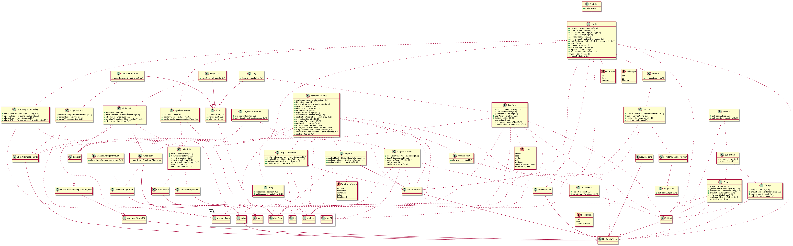
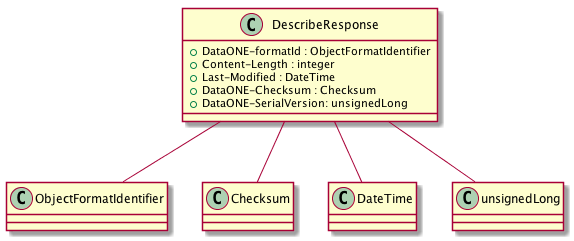
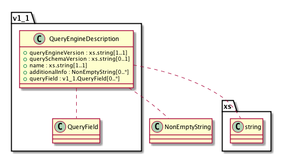
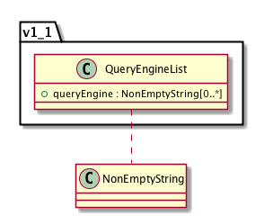
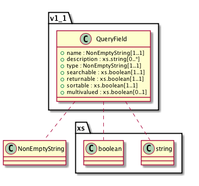

Data Types in CICore¶
Versions
Quick Reference
-
class
Types.OctetStream¶ A series of 8-bit bytes which combined together form a digital object. OctetStream is used to transfer object bytes such as the response to
MNRead.get().
-
class
Types.Integer¶ A simple integer. The range of expected values should be described with the accompanying API call.
The Integer type is serialized over XML using the predefined XMLSchema integer type, the value space of which is the infinite series {…,-2,-1,0,1,2,…}.
-
class
Types.Boolean¶ A boolean response is commonly used in the DataONE service APIs to indicate success or otherwise of an operation. For operations that are called through the service interfaces, a positive boolean response (i.e. True) is indicated by returning a HTTP response with a status code of “200”. The body of the message may contain additional content, but this should be ignored by the receiver.
A False or failure response must return an appropriate Error message and must set the appropriate HTTP status code on the response to indicate a failure.
The Boolean type is serialized over XML using the predefined XMLSchema boolean type, an instance of which can have the following legal literals {true, false, 1, 0}.
-
class
Types.DateTime¶ A string that completely identifies a specific date and time. When DateTime values are used within fields in request and response messages, and as URL-encoded values for parameters, all DateTime values will be typed using the XML Schema Datatypes definition (see XMLSchema dateTime) for the datetime serialization syntax (xs:dateTime). This syntax represents a subset of the ISO 8601 standard notation, and so standard ISO 8601 parsing libraries can be used to parse the values (see libraries used below). In addition, within DataONE, these values MUST be expressed with a timezone designation in UTC/GMT time only; local times are not permitted.
Must include date and time
The time zone must be 0, i.e. GMT
Valid representations include:
YYYY-MM-DDTHH:MM:SS.mmm
YYYY-MM-DDTHH:MM:SS.mmm+00:00
The milliseconds may be left off if that precision is not available.
In addition, in any methods that use date time values in HTTP headers, the serialization will follow the HTTP Full Date standard (RFC 1123), e.g:
Sun, 06 Nov 1994 08:49:37 GMT
In Java, code against java.util.Date, though serialization and deserialization will be performed with org.joda.DateTime to ensure millisecond precision is correct.
In Python, we use datetime.datetime to represent datetimes internally and a library called iso8601 to serialize and deserialize to Types.DateTime and Pyxb for the XML representation.
See also the XMLSchema dateTime type which is used for serializing DateTime values in XML transmitted between DataONE components.
-
class
Types.DescribeResponse¶ The
MNRead.describe()method provides a low cost hint about the type, size and state of an object.The DescribeResponse is returned from the server in a HTTP HEAD response, and hence the values must be represented in the HTTP response headers. There is no XML serialization of a DescribeResponse.
-
DataONE-formatId The value of the
SystemMetadata.formatIdentry available in theSystemMetadata.
-
Content-Length Size of the object in bytes, the value of
SystemMetadata.sizefromSystemMetadata.
-
Last-Modified A
DateTimevalue that indicates when the system metadata associated with the object was last modified, i.e. the value ofSystemMetadata.dateSysMetadataModifiedfor the object.
-
DataONE-Checksum The checksumAlgorithm and checksum value of the object being examined. The algorithm and checksum values are separated by a single comma with the algorithm first.
-
DataONE-SerialVersion The serialVersion value of the system metadata for the object as reported by the Node responding to the describe request.
Example of a HEAD response on object “ABC123”:
curl -I http://mn1.dataone.org/mn/v1/object/ABC123 HTTP/1.1 200 OK Last-Modified: Wed, 16 Dec 2009 13:58:34 GMT Content-Length: 10400 Content-Type: application/octet-stream DataONE-formatId: eml://ecoinformatics.org/eml-2.0.1 DataONE-Checksum: SHA-1,2e01e17467891f7c933dbaa00e1459d23db3fe4f DataONE-SerialVersion: 1234
-
-
class
Types.QueryEngineDescription¶ Describes a query engine that can be used to search content on the node. Query engines may be general purpose or specialized for particular communities or domains.
-
queryEngineVersion¶ Type: xs.string
The version of the underlying query engine. Used by clients to determine possible compatibility concerns or features available.
-
additionalInfo¶ Type:
Types.NonEmptyStringAn optional human readable description of the query engine. This can be used to describe any special capabilities or intended uses for the query engine. For example, a query engine may be tuned to suit a particular audience or domain as opposed to providing a general purpose discovery mechanism.
This field may also contain links to additional information about the query engine, such as documentation for the search syntax provided by the query engine implemntors.
-
queryField¶ Type:
v1_1.Types.QueryFieldA list of query fields supported by the query engine.
<xs:complexType xmlns:xs="http://www.w3.org/2001/XMLSchema" name="QueryEngineDescription"> <xs:sequence> <xs:element name="queryEngineVersion" type="xs:string" minOccurs="1" maxOccurs="1"> </xs:element> <xs:element name="querySchemaVersion" type="xs:string" minOccurs="0" maxOccurs="1"> </xs:element> <xs:element name="name" type="xs:string" minOccurs="1" maxOccurs="1"> </xs:element> <xs:element name="additionalInfo" type="d1:NonEmptyString" minOccurs="0" maxOccurs="unbounded"> </xs:element> <xs:element name="queryField" type="d1_v1.1:QueryField" minOccurs="0" maxOccurs="unbounded"> </xs:element> </xs:sequence> </xs:complexType>
-
-
class
Types.QueryEngineList¶ A list of query engine names that indicate the possible values for CNRead.getQueryEngineDescription and CNRead.query REST API endpoints.
-
queryEngine¶ Type:
Types.NonEmptyStringThe name of a queryEngine. This value will be used as a path element in REST API calls and so should not contain characters that will need to be escaped.
<xs:complexType xmlns:xs="http://www.w3.org/2001/XMLSchema" name="QueryEngineList"> <xs:sequence> <xs:element name="queryEngine" type="d1:NonEmptyString" minOccurs="0" maxOccurs="unbounded"> </xs:element> </xs:sequence> </xs:complexType>
-
-
class
Types.QueryField¶ -
name¶ Type:
Types.NonEmptyStringThe name of the field as used programmatically when constructing queries or other rferences to the field.
-
description¶ Type: xs.string
An optional, repeatable, brief description of the field that can be used to help guide developers or end users in appropriate use of the field. May for example, contain a links to additional documentation.
-
type¶ Type:
Types.NonEmptyStringThe type of the field, expressed in the language peculiar to the query engine being described.
-
searchable¶ Type: xs.boolean
Indicates if the field may be used in constructing queries (as opposed to only appearing in results)
-
returnable¶ Type: xs.boolean
Indicates if the field values may be returned in search results.
-
sortable¶ Type: xs.boolean
Indicates if the field can be used for sorting results.
-
multivalued¶ Type: xs.boolean
Indicates if the field may contain multiple values. Some query engines such as SOLR support this capability.
<xs:complexType xmlns:xs="http://www.w3.org/2001/XMLSchema" name="QueryField"> <xs:sequence> <xs:element name="name" type="d1:NonEmptyString" minOccurs="1" maxOccurs="1"> </xs:element> <xs:element name="description" type="xs:string" minOccurs="0" maxOccurs="unbounded"> </xs:element> <xs:element name="type" type="d1:NonEmptyString" minOccurs="1" maxOccurs="1"> </xs:element> <xs:element name="searchable" type="xs:boolean" minOccurs="1" maxOccurs="1"> </xs:element> <xs:element name="returnable" type="xs:boolean" minOccurs="1" maxOccurs="1"> </xs:element> <xs:element name="sortable" type="xs:boolean" minOccurs="1" maxOccurs="1"> </xs:element> <xs:element name="multivalued" type="xs:boolean" minOccurs="0" maxOccurs="1"> </xs:element> </xs:sequence> </xs:complexType>
-